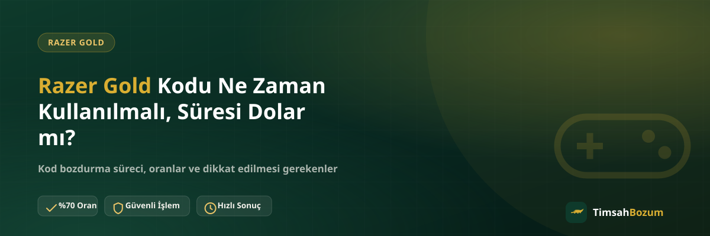

Elinde kullanmadığın bir Razer Gold kodu varsa aklına ilk gelen sorulardan biri genelde şu olur: bu kodu hemen mi değerlendirmeliyim, yoksa bir süre bekletebilir miyim? Kod bir çekmecede ya da telefon notlarında dururken zaman geçtikçe "acaba geçersiz mi olur" kaygısı da artar. Bu yazıda kodu elinde tutmanın riskleri, bozdurma için doğru zamanlama ve dikkat etmen gereken noktaları ele alıyoruz.
Razer Gold Kodu Nedir, Nasıl Çalışır?
Razer Gold kodu, tek kullanımlık bir dijital değer kodudur. Kod ya oyun hesabına yüklenip Razer Gold bakiyesi olarak kullanılır ya da hiç yüklenmeden, kendisi bir değer taşıyıcısı olarak bozdurulabilir. Kod bir kere kullanıldığında (yani bir hesaba yüklendiğinde) artık ayrı bir varlık olarak bozdurulamaz, çünkü değeri o hesabın bakiyesine dönüşmüş olur. Bu yüzden "ne zaman kullanmalıyım" sorusu aslında "ne zaman bozdurmalıyım, yoksa oyun hesabıma mı yüklemeliyim" sorusuyla aynı noktaya çıkar.
Kodu Elinde Bekletmek Güvenli mi?
Kodu hemen kullanmak zorunda değilsin, ama elinde tuttuğun süre boyunca bazı riskler birikir. Kod bir ekran görüntüsü, bir not uygulaması veya bir mesaj olarak dururken yanlışlıkla paylaşılma, kaybolma ya da başka bir cihaza geçerken unutulma riski taşır. Kod tek kullanımlıktır: kodu gören ve önce kullanan taraf, kodun değerini alır. Bu yüzden kodu uzun süre beklemek yerine, karar verdiğin an işlemi tamamlamak en güvenli yoldur.
Kodun Bir Son Kullanma Tarihi Var mı?
Kodun üzerinde ya da satın alma bilgilerinde bir tarih görebilirsin, görmeyebilirsin de. Her kodun güncel durumu farklı olabileceği için burada kesin bir süre vermek yanıltıcı olur. Elindeki kodun hâlâ geçerli olup olmadığını öğrenmenin en net yolu, kod bilgisini WhatsApp'tan paylaşıp güncel durumu teyit etmektir. Böylece "belki süresi dolmuştur" diye tahminde bulunmak yerine net bir cevap alırsın.
Kodu Ne Zaman Bozdurmak En Mantıklısı?
Kullanmayacağına karar verdiğin bir kodu elinde tutmanın pratik bir faydası yok. Oyun hesabına yüklemeyi düşünmüyorsan ve nakde çevirmek istiyorsan, kararını verdiğin an işlemi başlatman en doğrusu. Erteleme genelde sadece riski uzatır: kod paylaştığın bir cihazda kalır, birden fazla kişi görebilir ya da zamanla nerede durduğunu unutabilirsin.
Kod Kullanılmışsa Bozum Yapılır mı?
Hayır. Bozum işlemi, kodun hiç kullanılmamış, yani hiçbir hesaba yüklenmemiş olmasına dayanır. Kod bir oyun hesabına yüklendiği anda artık o hesabın bakiyesine dönüşür ve ayrı bir kod olarak bozdurulamaz. Bu yüzden bozdurmaya karar verdiğin kodu "önce deneyeyim, işe yarıyor mu bakayım" diye bir hesaba yüklememen gerekir; kodu kullanmak, bozum seçeneğini ortadan kaldırır.
Kodu Kaybetme Riskine Karşı Ne Yapmalısın?
Kodu güvenli bir şekilde not aldıktan sonra, mümkünse uzun süre beklemeden değerlendirmen en pratik yaklaşım. Kodu birden fazla yerde (ekran görüntüsü, not defteri, mesaj geçmişi) tutmak kafa karışıklığına yol açabilir; hangi kopyanın güncel olduğunu takip etmek zorlaşır. Kararını verdikten sonra tek bir kaynaktan, net ve eksiksiz şekilde paylaşmak işlemi hem senin için hem karşı taraf için kolaylaştırır.
Hediye Gelen Bir Kodda Zamanlama Değişir mi?
Hediye olarak aldığın bir Razer Gold kodunda da mantık aynı kalır. Kodu kullanmayacaksan, elinde tutma süresi uzadıkça kaybolma veya yanlışlıkla ifşa olma riski artar. Hediye kodlarında bazen kodun nereden geldiği, ne zaman alındığı net olmayabilir; bu durumda da güncel bilgiyi öğrenmek için WhatsApp'tan teyit istemek en sağlıklı adımdır.
Telefon veya Hesap Değişikliği Kodu Riske Atar mı?
Kodu bir cihazdan diğerine taşırken, yeni bir telefona geçerken veya WhatsApp hesabını değiştirirken kod bilgisinin kaybolma riski artar. Mesaj geçmişi yedeklenmemişse veya ekran görüntüsü yanlış klasöre kaydedilmişse, kod elinin altındayken aslında erişemediğin bir hâle gelebilir. Böyle bir geçiş yapmayı planlıyorsan, kodu önceden bozdurmak veya en azından güvenli bir yere ayrıca not etmek mantıklı bir önlemdir.
Kararsızsan Ne Yapmalısın?
Kodu bozdurmak mı yoksa oyun hesabına yüklemek mi daha iyi olur diye kararsız kalabilirsin. Bu durumda oranı öğrenmek seni hiçbir şeye bağlamaz: WhatsApp'tan kod bilgini paylaşıp güncel oranı öğrenmek bir taahhüt oluşturmaz. Oranı gördükten sonra hâlâ kararsızsan işlemi yapmadan vazgeçebilirsin; asıl risk, hiç sormadan kodu belirsiz bir şekilde elinde tutmaya devam etmektir.
Paylaşmadan Önce Kodu Tekrar Kontrol Etmeli misin?
Kodu WhatsApp'a yazmadan ya da ekran görüntüsünü göndermeden önce karakterleri bir kez daha gözden geçirmek küçük ama işe yarayan bir adımdır. Benzer görünen karakterler (büyük I ile küçük l, O ile 0 gibi) elle yazarken karışabilir; bu da bilginin yanlış iletilmesine ve sürecin gereksiz yere uzamasına yol açar. Mümkünse kodu elle yazmak yerine kopyala-yapıştır yapmak veya net bir ekran görüntüsü göndermek bu riski ortadan kaldırır.
Bozdurma Süreci Nasıl İşler?
Kararını verdikten sonra süreç basit: Razer Gold bozdurma hattımızdan kod bilgini paylaşırsın, güncel oranı teyit edersin, onay sonrası ödemen WhatsApp üzerinden görüşülen yöntemle yapılır. Üyelik, form veya kimlik belgesi istenmez; tek ihtiyacın kodun kendisi. Kod tabanlı bir hizmet olduğu için kısmi bozum yapılmaz, kodun tam değeri tek seferde değerlendirilir.
İlgili Yazılar
- Razer Gold Kodu Kullanılmışsa Ne Olur?
- Razer Gold Kodu Neden Tam Değeri Üzerinden Bozdurulur?
- Razer Gold PIN Kodu Paylaşırken Güvenlik Önlemleri
Elinde bekleyen bir Razer Gold kodu varsa, kullanmayacağına karar verdiğin an riski uzatmadan WhatsApp hattımızdan güncel durumu teyit edip işlemini başlatabilirsin.